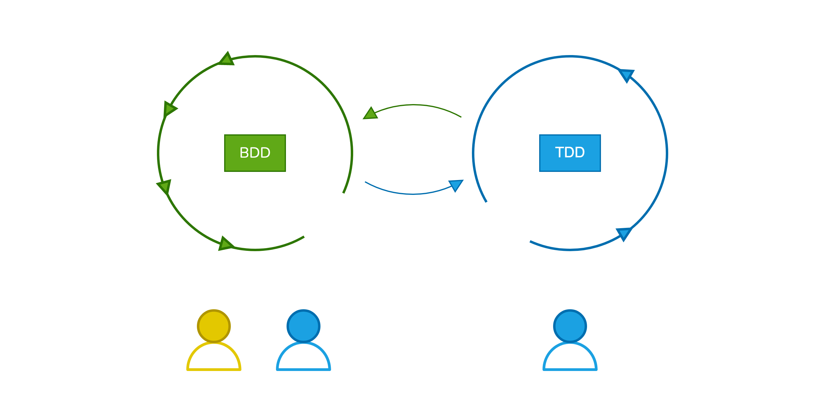

GDD - Gurken Driven Development
Wie das Gemüse des Jahres 2019 & 2020 die Zusammenarbeit von Entwicklern und QA vereinfacht
Speakers
Agile Engineer
Agile Engineer
Kennt ihr das, wenn...
Ihr kein gemeinsames Verständnis über das Verhalten eurer Software habt?
Eure Feedback Loops zu lang sind und somit zu Ineffektivität und doppelter Arbeit führen?
Die Abnahme einer Story Ewigkeiten benötigt?
Developer keine Ahnung haben, wie sie ein Feature testen sollen?
Jetzt seid ihr gefragt!
Wie löst ihr diese Probleme bei euch?
Habt ihr Erfahrungen mit BDD?
Was ist BDD?
"Behavior Driven Development"
Spezifizierung des Verhaltens einer Software in textueller Form
Testing des spezifizierten Verhaltens mit Fallbeispielen
Einbeziehung von Stakeholder in die Anforderungsanalyse
Wie hilft uns BDD agiler zu werden?
Stärkt Zusammenarbeit innerhalb des Teams und mit den Stakeholdern
Stärkt das gemeinsame Verständnis von Software
Ermöglicht schnellere Feedback Loops
Wie funktioniert BDD?
Wie kann man BDD implementieren?
Cucumber
Feature Files
Feature: Rescue operation
# Ein Szenario beschreibt ein Verhalten
Scenario: Firefighters saves a kitten
# Setzt eine Situation oder einen State voraus
Given A kitten has been stuck on a tree
# Spezifiziert eine Aktion
When The firefighters rescue the kitten
# Erwartet ein Resultat
Then State of kitten is "rescued"
Software Tests
BDD Best-Practices
In der Arbeitsweise mit BDD
Im Team das Verhalten der Software definieren
TDD leben
CI Pipeline für Automatisierung
BDD Anti-Patterns
In der Arbeitsweise mit BDD
Verhalten wird definiert, nachdem Code implementiert wurde
Product Owner schreibt Szenarien im Alleingang
Szenarien enthalten zu viele Informationen
Gherkin Best-Practices
Gherkin Best-Practice #1 - Die goldene Regel
Lesbarkeit und Verständnis steht über Allem
Feature: Fire department
Scenario: Forest fire
Given A forest has caught fire
When The wildfire is detected
And The fire department extinguishes the wildfire
Then State of the forest fire is "extinguished"
Gherkin Best-Practice #2 - One-to-one Regel
Jedes Szenario beschreibt genau ein Verhalten
1 Verhalten -> 1 Beispiel -> 1 Szenario -> 1 Test -> 1 Resultat
Feature: Fire department
Scenario: Emergency call
Given An emergency
When Emergency call received by emergency hotline
Then Fire departments state is "alert"
Scenario: Fire fighting
Given A car caught fire
When Fire truck extinguishes burning car
Then State of the car is "extinguished"
Vorteile der One-To-One Regel...
Jeder Testfehler zeigt auf ein einzigartiges Problem
Weniger komplexe Arbeit ermöglicht schnellere Feedback Loops
Erhöht die Lesbarkeit
Gherkin Best-Practice #3 - Grammatik
Verwenden der korrekten Grammatik hilft dabei das Verständnis zu erhöhen
Feature: Fire department
Scenario: Fire fighting
# Vermeidung der Vermischung von verschiedenen Erzählformen
# (entweder Erste oder Dritte Person)
# Given -> Past or present-perfect tense
Given A car that has caught fire
# When -> Present tense
When Fire truck extinguishes burning car
# Then -> Present or future tense
Then State of the car is "extinguished"
Gherkin Anti-Patterns
Gherkin Anti-Pattern #1
Verschachtelte When-Then-When-Then Szenarien
Feature: Fire department
Scenario: Fire fighting
Given A car that has caught fire
When Emergency call received
Then Department receives alarm
When fire truck leaves fire department
Then fire truck arrives at the place of the accident
When fire truck extinguishes the burning car
Then State of the car is "extinguished"
Gherkin Anti-Pattern #2
Beschreibung der Aktionen anstatt Beschreibung des Verhaltens
Feature: Fire department
Scenario: Rescue operation
Given A man is trapped in his car after an accident
When 3 Fire trucks with 4 firefighters each arrive
And Firefighters secure the place of the accident
And Firefighters ...
And ...
...
Then State of the accident participant is "rescued"
Demo
Römische Ziffer (IV) -> Dezimalzahl (4)
Dezimalzahl (4) -> Römische Ziffer (IV)
Erstes Featurefile
Feature: Roman Numerals
Converts roman numerals to decimal numbers
Scenario:
Given The roman numeral "II"
When Converted to decimal number
Then The output should equal 2
Tests
@Given("The roman numeral {string}")
fun `Given the roman numeral`(roman: String) {
romanNumber = roman
}
@When("Converted to decimal number")
fun `When converted to decimal number`() {
decimalNumber = numeralsConverter.convert(romanNumber)
}
@Then("The output should equal {int}")
fun `Then the output should equal`(exp: Int) {
assertNotNull(decimalNumber)
assertEquals(exp, decimalNumber)
}
Implementierung
class NumeralsConverter {
private val romansToDecimals = mapOf(
"II" to 2
)
fun convert(romanNumeral: String): Int? = romansToDecimals[romanNumeral]
}
Testausgabe
cucumber.plugin=pretty, html:build/cucumber-reports/Cucumber.htmlLebende Cucumber Dokumentation
CI Pipeline
name: Cucumber Test
on: [push, pull_request]
jobs:
bdd_test:
runs-on: ubuntu-latest
name: BDD Test
steps:
- uses: actions/checkout@v3
- uses: actions/setup-java@v3
with:
java-version: 8
distribution: zulu
- name: Run Cucumber tests
run: |
./gradlew test
- name: Upload Cucumber test results
if: always()
run: |
curl -X POST https://c4j.cucumber.io/ci/rest/api/results \
-H 'authorization: Bearer ${{ secrets.CUCUMBER_FOR_JIRA_CREDS }}' \
-H 'content-type: multipart/form-data' \
-F 'results_files[]'=@build/cucumber-reports/Cucumber.json \
-F language=jvm
LIVE DEMO
Weitere Tools
Smartbear Cucumber Studio
Zephyr Scale
Concordion